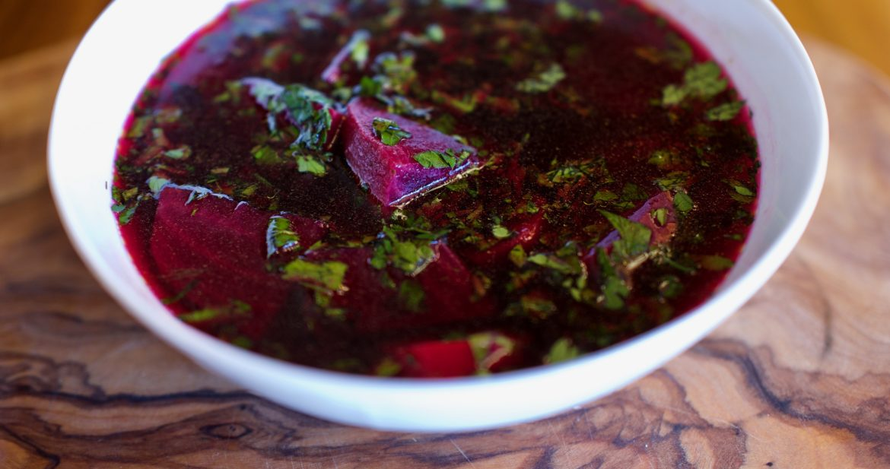

Home
Beet Soup

A gorgeous, healthy, and very tasty beet soup that's so simple to make. Beets and sauteed onions and garlic simmer in beef broth before being finished with a swirl of cream.
Ingredients
-
3 tablespoons olive oil
- 1 medium onion, chopped
- 3 cloves garlic, chopped
- 6 medium beets, peeled and chopped
- 2 cups beef stock
- salt and freshly ground pepper
- heavy cream
Directions
- Warm olive oil in a large saucepan over medium heat. Stir in onions and garlic; cook until soft but not browned, about 5 minutes. Stir in beets, and cook for 1 minute.
- Stir in stock, and season with salt and pepper. Bring to a boil; cover, and simmer until the beets are tender, about 20 to 30 minutes. Remove from heat, and allow to cool slightly.
- In batches, add soup to a food processor, and pulse until liquefied. Return soup to saucepan, and gently heat through. Ladle into bowls, and garnish with a swirl of cream.